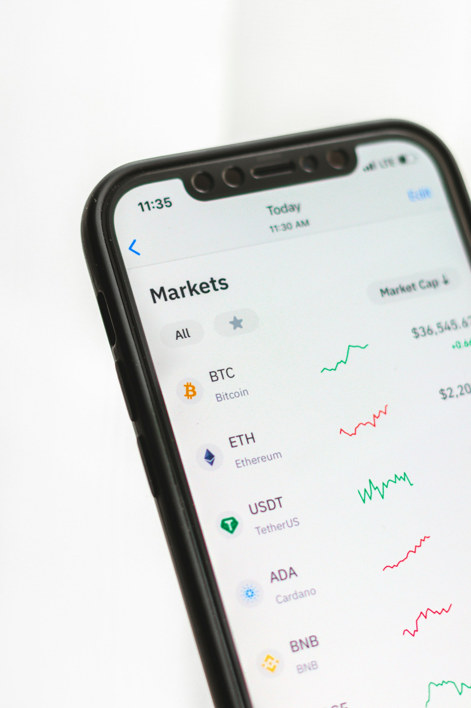
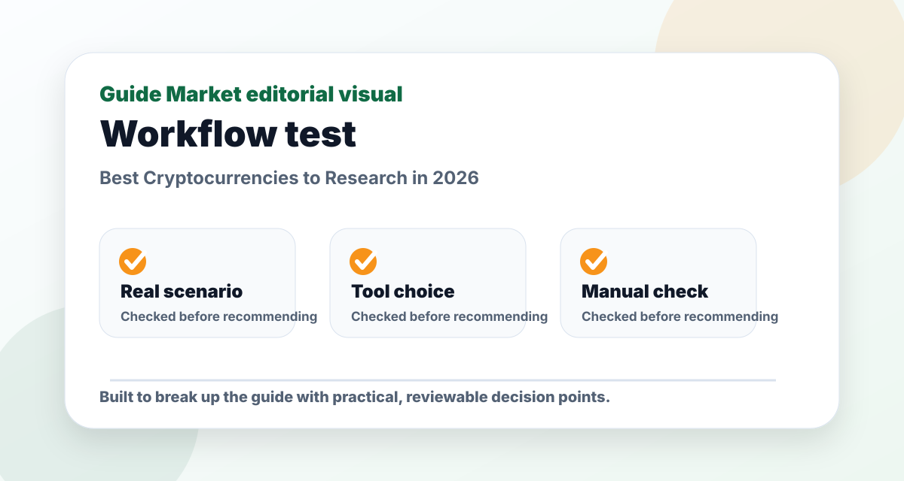
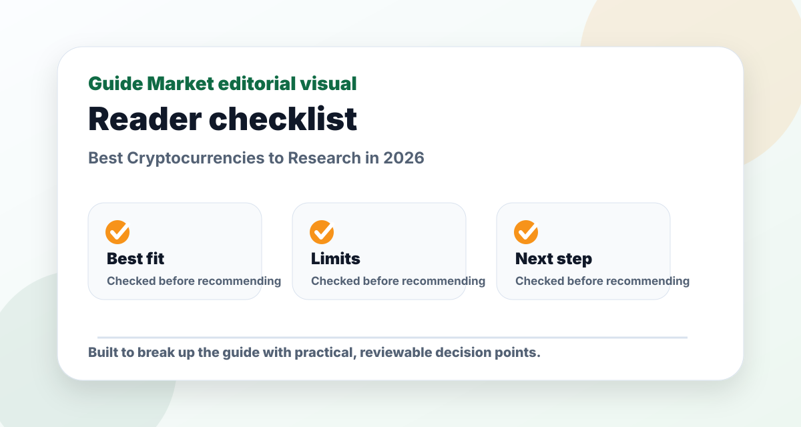
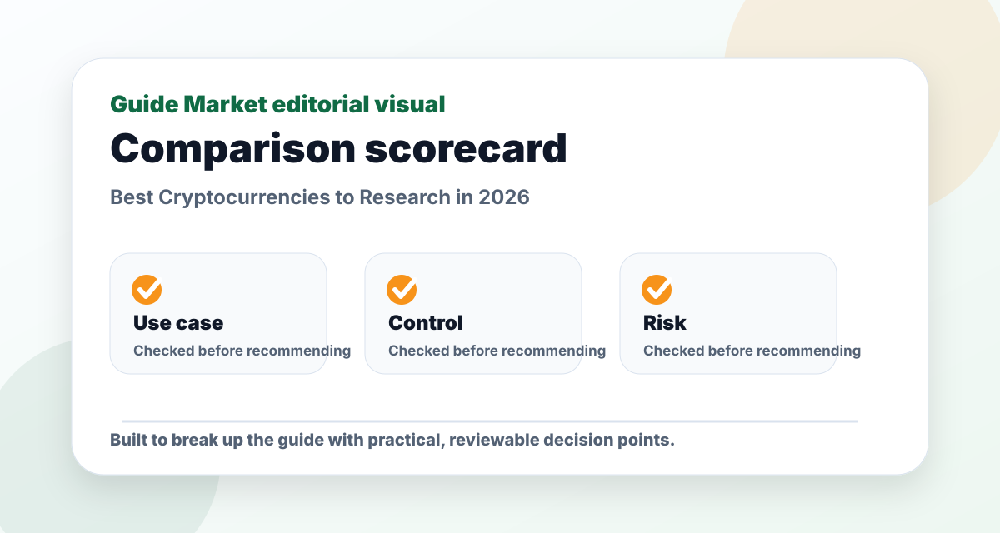

Best Cryptocurrencies to Research in 2026
Published May 12, 2026. Last updated May 24, 2026. Estimated reading time: 9 minutes.
If someone asks for the best crypto to invest in during 2026, the honest answer is that no article can know your risk tolerance, time horizon, taxes, or entry price. What a useful article can do is help you build a research watchlist, understand why each asset matters, and avoid buying only because a chart moved fast.


The real problem this guide solves
The reason this topic matters is not that best cryptocurrencies 2026 are trendy. The real problem is researching crypto assets without chasing hype, fake certainty, or promises of easy money. A useful guide should help you make a decision faster while also showing what could go wrong.
My editorial approach is to treat Bitcoin (BTC), Ethereum (ETH), Solana (SOL), Chainlink (LINK), Stablecoins as practical options, not magic answers. I look for workflow fit, learning curve, verification needs, pricing transparency, and the amount of work left after the first output. That is usually where the difference between a good-looking tool and a genuinely useful tool becomes obvious.
How to compare the options
| Criterion | Why it matters | What I would check |
|---|---|---|
| Best fit | A tool or asset should solve a specific problem, not simply look impressive. | Use it against one realistic scenario: an investor comparing Bitcoin, Ethereum, Solana, Chainlink, and stablecoins before deciding whether any deserve a small allocation. |
| Control | You need to edit, verify, export, or adapt the result. | Check whether the output can be changed without starting over. |
| Risk | Every option has a downside: cost, accuracy, privacy, volatility, complexity, or lock-in. | Write the failure case before you commit. |
| Long-term usefulness | The best choice should still be useful after the novelty fades. | Ask whether you would use it weekly, monthly, or only once. |
Pros and cons at a glance
| Approach | Pros | Cons |
|---|---|---|
| Broad diversified research | Reduces dependence on one idea and encourages patience. | Less exciting and may feel slow during market rallies. |
| Individual assets | Can match a specific thesis and offer higher upside if correct. | Requires more research and can create concentrated losses. |
| Waiting for clarity | Protects capital and reduces emotional decisions. | Can feel uncomfortable when prices are rising quickly. |

Practical example workflow
For a realistic test, I would start with this situation: an investor comparing Bitcoin, Ethereum, Solana, Chainlink, and stablecoins before deciding whether any deserve a small allocation. That is specific enough to reveal whether the recommendation actually helps. A vague test produces a vague conclusion.
Step one is to define the outcome. Step two is to compare two or three options using the same task. Step three is to check what must be verified manually. Step four is to save the winning workflow as a reusable checklist. This matters because a one-time good answer is less valuable than a process you can repeat.
My preferred setup here is Bitcoin and Ethereum as first research priorities, with Solana and Chainlink treated as higher-risk satellite ideas. I would not add more options until that workflow hits a clear limit. More tools can create more decisions, and more decisions often reduce consistency.

Common mistakes
- Choosing the most popular option without checking whether it fits the actual task.
- Accepting the first output or first recommendation without editing, testing, or verifying it.
- Paying for multiple subscriptions before proving that one workflow saves time or improves quality.
- Ignoring privacy, source quality, pricing changes, or hidden limitations.
- Using the same generic prompt, template, or decision rule for every situation.
Final recommendation
If I had to make a practical recommendation, I would start with Bitcoin and Ethereum as first research priorities, with Solana and Chainlink treated as higher-risk satellite ideas. That recommendation is not based on hype; it is based on which option gives a useful first result while still leaving the reader in control.
The best decision is the one you can explain clearly after the tab is closed. If you cannot explain why you chose an option, what its limitation is, and what you will verify next, keep researching before committing time or money.
FAQs
Is this article financial advice?
No. This guide is educational research content. It does not know your personal financial situation, taxes, debt, income, time horizon, or risk tolerance.
Should beginners buy the assets mentioned here?
Not automatically. Beginners should usually start with a written plan, an emergency fund, and diversified research before considering individual stocks, ETFs, or crypto assets.
How often should I update my research?
Quarterly is enough for many long-term investors. Update sooner if the original thesis changes, fees change, regulation changes, or a major company-specific event occurs.
What is the biggest mistake to avoid?
The biggest mistake is confusing a watchlist with a recommendation. A watchlist is a starting point for research, not a promise that an investment will perform well.
Quick answer
For most readers, the first crypto assets to research in 2026 are Bitcoin and Ethereum because they have the deepest market history, the largest developer and institutional attention, and the clearest reasons for existing. After that, Solana and Chainlink are worth studying as higher-risk satellite ideas. Stablecoins are not growth investments, but they matter because they explain how people move value inside crypto markets. Smaller tokens may produce dramatic gains, but they also carry a much higher chance of permanent loss.
Research watchlist
| Asset | What it is best known for | Main risk to understand | My research view |
|---|---|---|---|
| Bitcoin (BTC) | Digital scarcity, macro hedge narrative, spot ETF access | Large drawdowns and sentiment cycles | Best first crypto to understand before anything else |
| Ethereum (ETH) | Smart contracts, DeFi, tokenized assets, developer ecosystem | Competition, scaling complexity, regulatory uncertainty | Best network to study for crypto utility |
| Solana (SOL) | Fast consumer apps, low fees, active developer culture | Network concentration, outage history, higher volatility | Interesting, but I would size it as higher risk |
| Chainlink (LINK) | Data oracles connecting blockchains with external information | Token economics and adoption pace | Useful infrastructure story, not a simple store-of-value bet |
| Stablecoins | Payments, dollar liquidity, crypto settlement | Issuer risk, regulation, reserve quality | Useful to understand, not a growth investment |
How I would think about crypto in 2026
My editorial view is simple: crypto should be researched from the top down, not from hype outward. Start with the assets that have survived multiple cycles. Ask what problem each network solves, who uses it when prices are not rising, how secure the system is, and whether its token actually captures value from that use. If you cannot explain the asset in two calm paragraphs, you probably do not understand it well enough to buy it.
Bitcoin is the cleanest starting point because its investment case is relatively narrow. People buy it because they believe a scarce, decentralized digital asset can become a long-term store of value, a hedge against currency debasement, or a portfolio diversifier. That thesis can still be wrong, but at least the question is clear. Bitcoin does not need to become a world computer or replace every bank to justify why investors study it.
Ethereum is different. Its value comes from the idea that blockchains can run applications, settle tokenized assets, support decentralized finance, and create programmable money. That makes Ethereum more flexible than Bitcoin, but also harder to evaluate. You have to understand fees, scaling networks, developer activity, competition, staking, regulation, and whether users actually need the chain when speculative activity slows.
Bitcoin: best for understanding the category
Bitcoin is still the asset I would research first. It has the strongest brand in crypto, the longest operating history, and the clearest monetary narrative. In 2026, the presence of spot Bitcoin ETFs in major brokerage accounts also means many investors can study Bitcoin exposure without using a crypto exchange or managing private keys. That does not make Bitcoin safe. It only makes access easier.
The bull case is that Bitcoin remains the default digital scarcity asset. If more institutions, funds, and individual investors decide to hold a small allocation, demand can be meaningful because supply is limited by design. The bear case is just as important: Bitcoin produces no cash flow, can fall sharply, depends on market confidence, and can spend years below previous highs. A good Bitcoin investor needs patience and an unusually strong stomach for volatility.
My opinion: Bitcoin is the least speculative way to study crypto, but it is still speculative compared with broad stock index funds. I would not treat it like a savings account, and I would not build a financial plan that depends on Bitcoin going up by a certain date.
Ethereum: best for blockchain utility
Ethereum is the most important network to research if you care about crypto use cases beyond store of value. Stablecoins, decentralized exchanges, lending protocols, NFTs, tokenized assets, and many developer experiments have historically revolved around Ethereum or Ethereum-compatible infrastructure. That gives ETH a different kind of investment case: it is partly a network bet, partly a technology bet, and partly a financial-infrastructure bet.
The positive case is that if more real assets, financial products, identity systems, or applications move onto public blockchains, Ethereum could remain one of the core settlement layers. The negative case is that competitors can capture activity, users can move to cheaper networks, regulation can limit certain applications, and layer-two scaling can make value capture more complicated than early investors expected.
My opinion: Ethereum is more intellectually interesting than Bitcoin, but also harder to underwrite. It is not enough to say “smart contracts are the future.” You need to ask which users pay fees, which applications endure, and how ETH benefits from that activity.
Solana: best high-risk growth network to study
Solana is often discussed because it focuses on speed, low fees, and consumer-friendly crypto experiences. It has attracted developers in payments, trading, NFTs, mobile, and on-chain apps that need fast confirmation and cheap transactions. That makes it one of the more interesting non-Bitcoin, non-Ethereum networks to research.
The reason I would keep Solana in a research list is that user experience matters. If crypto ever becomes more mainstream, ordinary users will not want slow, expensive interactions. Solana tries to solve that directly. The risk is that technical tradeoffs, validator concentration, network reliability, and competition can all affect confidence. It can also be far more volatile than Bitcoin or Ethereum.
My opinion: Solana belongs in the “satellite position” category, not the “core financial foundation” category. It may be attractive for investors who understand the risks, but it should not be confused with a conservative investment.
Chainlink: best infrastructure token to understand
Chainlink is different from most crypto assets because it is not primarily trying to be money or a general-purpose smart-contract network. Its main role is to provide oracle infrastructure: ways for blockchains to access external data, prices, events, and cross-chain information. If crypto grows into a more useful financial system, reliable data infrastructure matters a lot.
The challenge is that infrastructure tokens can be harder to value. A project can be important without the token necessarily appreciating in a simple, linear way. Investors need to understand demand for services, token utility, competition, partnerships, and whether usage creates durable value for holders.
My opinion: Chainlink is one of the few infrastructure projects worth understanding, but I would research token economics carefully before treating it like an obvious investment.
Stablecoins: important, but not a growth bet
Stablecoins such as dollar-backed tokens are crucial to crypto markets because they let users move value quickly without leaving the ecosystem. They are used for trading, payments, transfers, DeFi, and treasury management. However, they are not designed to multiply in value. A dollar stablecoin is supposed to remain close to one dollar.
The risks are different: reserve quality, issuer transparency, regulatory pressure, smart-contract risk, and liquidity during stress. Anyone researching crypto should understand stablecoins because they are part of the market plumbing, but they should not be described as “the next Bitcoin.”
How to build a safer crypto research process
Before buying anything, write down the thesis, the risk, the time horizon, the maximum allocation, and the reason you would sell. That sounds boring, but it protects you from emotional decisions. Crypto markets move fast, and without rules you will be tempted to chase green candles or panic during normal volatility.
I would separate a crypto portfolio into core and satellite ideas. Core means assets you understand deeply and could hold through a large drawdown. Satellite means smaller positions in higher-risk ideas that could fail. For many people, the safest answer may be no direct crypto at all, or only a very small allocation inside a diversified portfolio.
The best crypto research question is not “which coin will pump?” It is “what asset can I understand well enough to hold responsibly, and what size would not damage my life if I am wrong?” That question is less exciting, but it is much more useful.
My sample research routine before buying crypto
If I were researching a crypto asset from zero, I would not start with price predictions. I would start with a one-page memo. The first paragraph would explain what the network does. The second paragraph would explain why the token needs to exist. The third paragraph would explain who uses it when the market is not euphoric. The fourth paragraph would list the reasons the asset could fail.
Then I would check basic market structure. Is the asset liquid on reputable venues? Is most of the supply already circulating, or are large unlocks still ahead? Is developer activity real or mostly marketing? Is the community discussing products, or only price? Does the project have a security history that makes me uncomfortable? These questions do not guarantee safety, but they remove a lot of low-quality ideas quickly.
Finally, I would compare the asset with doing nothing. This is underrated. Every dollar put into a crypto token is a dollar not used for an emergency fund, broad index fund, debt repayment, education, or a business. A speculative asset has to earn its place. If the only reason to buy is “it might go up,” the thesis is too weak for me.
How much crypto is too much?
There is no universal number, but I think many beginners underestimate volatility. A portfolio that feels comfortable during a rising market can feel unbearable during a drawdown. One practical rule is to imagine the crypto allocation falling by 70 percent and ask whether your financial life would still be fine. If the answer is no, the allocation is too large.
I also prefer separating time horizons. Money needed in the next one to three years should not depend on crypto returns. Long-term speculative capital is different. If someone has a stable emergency fund, no urgent high-interest debt, and a diversified base, then a small crypto research allocation may be easier to handle emotionally. Without that foundation, crypto can add stress instead of opportunity.
Red flags I would avoid
- Projects that promise guaranteed returns or “risk-free” yield.
- Anonymous teams controlling large treasuries without clear governance.
- Tokens whose only use case is attracting more buyers.
- Influencer-driven coins with no product, no users, and no transparent roadmap.
- Assets with thin liquidity where exiting a position could be difficult.
The best crypto opportunities do not need pressure tactics. If a project depends on urgency, secrecy, or fear of missing out, I would rather miss it.
Important risk note
Nothing on this page is a personal recommendation to buy or sell any investment. Crypto assets can be extremely volatile, individual stocks can lose value quickly, and even diversified funds can decline for long periods. If you invest, consider your emergency fund, time horizon, debt, taxes, concentration risk, and ability to tolerate losses before taking action.